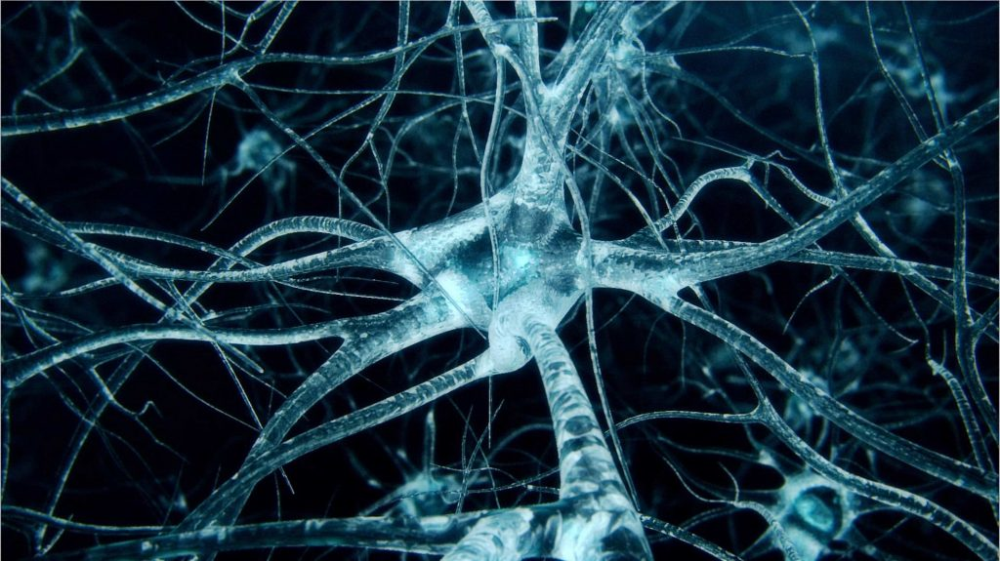

Neuroplasticity and Growth Mindset
What is Neuroplasticity and how can its principles be benefitial?
Neuroplasticity refers to the brain's ability to adapt by forming new connections and pathways and change how its circuits are wired. It is the ability to undergo physiological changes which happen as the result of our interactions with our environment. The connections among the cells in our brains reorganize in response to our changing needs and learning experiences.
Remember back when you had to learn the times table in math for the first time. That process of learning something new is hard, but as you keep repeating the times table aloud or in your head and started using it more and more in class, it slowly but surely got easier.
That's becasue we were in the initial phases of creating a new pathway in our brain that connects it to the relavent neurons. As we continue to use that path with more frequency, the path gets bigger in order to support the demand for that bit of information. If this principal of Neuroplasticity is applied to all new learning experiences then one can believe that with time and practice, we will always get better and faster at retrieving that information which in turn makes the new concepts easier to understand and faster to learn more in the long run.
How can you engage with the principals of neuroplasticity for your own benefits?
Practice, practice and practice! What we have to concentrate on right now is to increase the frequency of use of that new neural pathway in as many forms as possible. Hopefully, in time, we would become more receptive towards new but relevant information on the topic, which in this case are programming and Web Development.
What are some of the ways to increase your neuroplasticity?
In this case a few different learning mediums are being utilized to effectively increase neuroplasticity. Interactive channels like freecodecamp.com and Udacity are good examples as they both have an interactive side to the learning process, we are not just looking at some text on a page and hope that it doesn't just go in one eye socket and out the other. Youtube video tutorials and work alongs are the same concept except we are using a different stimulus (hearing) to help with the learning process. And then there are actual challenges and exercieses that we do to help strengthen that connection and improve understand via application.
By far the most useful and concise resources that I have encountered are PositivePsychology and Edutopia.
What is the Growth Mindset and why is it relevant?
Growth mindset is but one side of a coin in the subject of human mindsets. It has led into many indepth studies in human behaviour and is of great interest to the education sector.

Before we talk about growth mindset in detail, it is important for us to also discuss its counterpart, fixed mindset, in order to explain what the major differences between them are.
Fixed mindset assumes that our character, intelligence, and creative ability are static, meaning something you are born with that cannot be changed in any meaningful way. It assumes that intelligence is something that is inherent to each person.
Growth mindset on the other hand, is more about people believing that their most basic abilities can be developed through dedication and hardwork. Being aware of the fact that everyone is capable of learning new things and disregarding the limits that they place on themselves, like one's perceived level of intelligence, gives people the ability to reflect on their actions, embrace mistakes and learn from them.
All humans are of both mindsets to varying degress, but the practice of embracing growth mindset is more benefitial to personal progress than a fixed mindset that does nothing but put a limit on what a person can achieve.
Some helpful links about Growth Mindset from Brainpickings, Farnam Street and The glossary of Education Reform.
In this exploration, did anything surprise you? Change for you?
The exploration into this topic did not surprise me in the slightest, if anything I am now even more sure that I have always been more of a growth mindset kind of person. I grew up being told I couldn't do certain things because of factors I could not change or have control over. It has always been my mission to prove them wrong.
How will you integrate growth mindset into your learning journey?
As mentioned above and in my reflections from previous sprints, I think I already have... I have always been the kind of person to internalise my past actions, mistakes, sense of self (sometime a little too much) and move on from them, learn from them and improve. This course is no different, it is simply a new channel to expand my capacity to learn and grow.